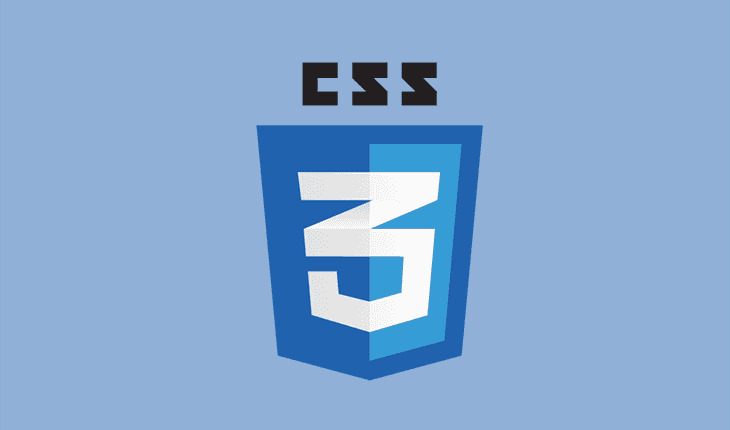

Belajar CSS Dasar"Untuk menjadi bisa itu butuh proses, salah satu proses itu adalah belajar" |
|---|
|  |
|---|
|
HTML dan CSS sudah menjadi bagian tak terpisahkan dari website modern. HTML digunakan untuk membuat konten atau kerangka logis dari halaman web, sedangkan CSS digunakan untuk mengatur tampilan dari website seperti warna background dan font yang digunakan. Jika anda ingin belajar web design, CSS adalah hal yang wajib dikuasai. |
| Cindi Undi Copyright @ 2020 |
|---|